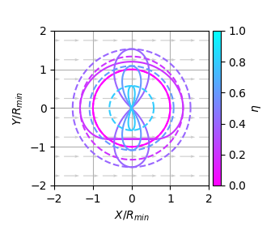
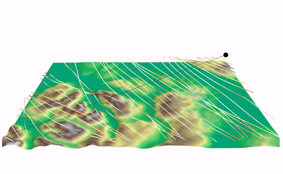

Jaeyoung Lim

Research
Preprints

Safe Periodic Trochoidal Paths for Fixed-Wing UAVs in Confined Windy Environments
Autonomous and efficient large-scale snow avalanche monitoring with an Unmanned Aerial System (UAS)
[preprint]
Journal Publications
Geometric Tracking Control of Omnidirectional Multirotors for Aggressive Maneuvers
Robotics and Automation Letters (RA-L)
[preprint]
[paper]
[video]

Conference Papers

Energy-optimized planning in non-uniform wind fields with fixed-wing aerial vehicles
International Conference on Intelligent Robots and Systems (IROS) 2024

SnowSampler: an Autonomous Uncrewed Aerial Vehicle for Penetration-Based Snow Stratigraphy Measurements on Steep Slopes
International Snow Science Workshop(ISSW) 2024
Fisher Information Based Active Planning for Aerial Photogrammetry
International Conference on Robotics and Automation (ICRA) 2023
[paper]
Posters & Workshop Papers
PX4Space: PX4 for Spacecraft and Space Robotics
iSpaRo 2024 Workshop on Exploring the Lunar Frontier Leveraging Robotic Missions

Autonomous Active Mapping in Steep Alpine Environments with Fixed-Wing Aerial Vehicles
ICRA 2024 Workshop on Field Robotics - 🏆Best Workshop Paper Award

Circling Back: Dubins set Classification Revisited
ICRA 2023 Workshop on Energy Efficient Aerial Robotic Systems

Last update: June 12, 2024